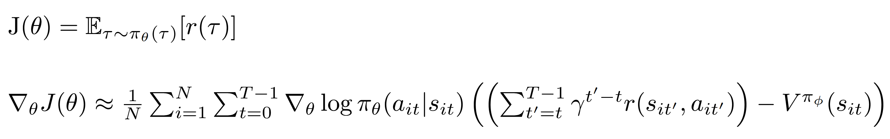
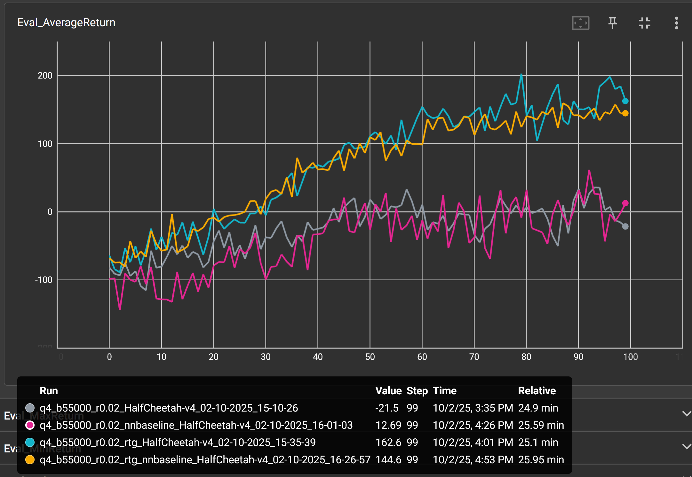
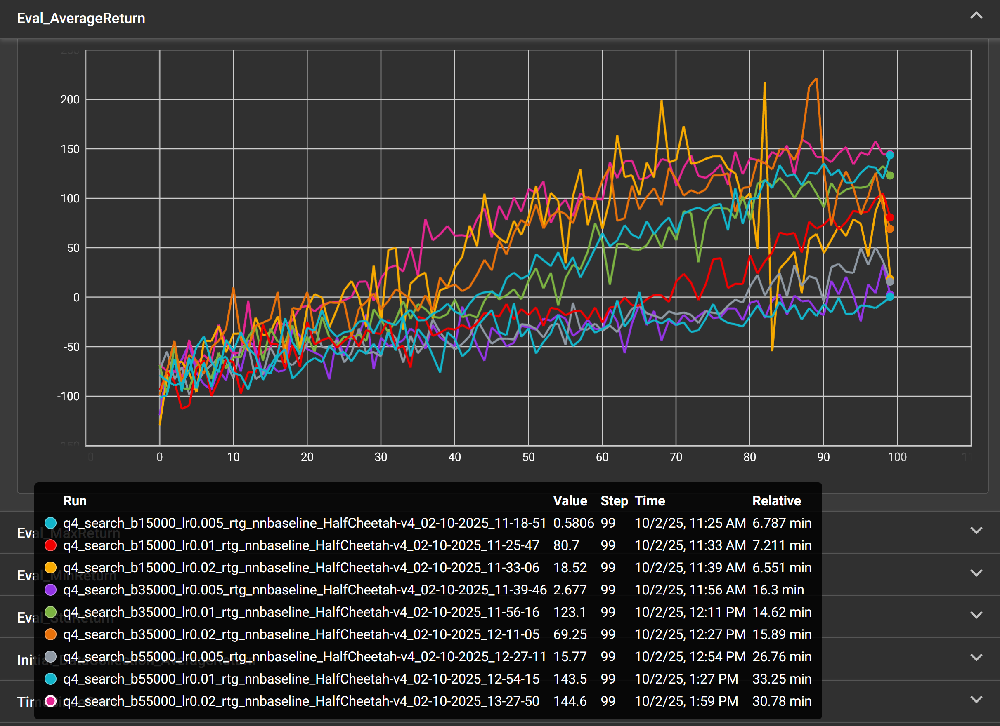

RL for Agile Locomotion
Challenge
Reinforcement learning allows robust and agile control of non-linear, high degree of freedom robots with complex contact-force interactions. As a class assignment, I implement a Actor-Critic RL algorithm to control a legged robot in sim. I run experiments to identify how different variance-reduction techniques and hyperparameter tunings affect learning.
Solution Summary
For this project, I:
- Implement reinforcement learning using an on-policy policy gradient algorithm
- Ablate implementation components to understand impact on training
- Vary hyperparameter tuning to understand impact on training
Actor-Critic RL Implementation
At each timestep, the torque applied to each motor in the robot is sampled from a multidimensional Gaussian parameterized by the output of a multilayer perceptron (the policy or Actor) based on the current state of the robot and the environment. We incentivize certain behaviours (like stable, forward motion) by giving a high score (the reward) to trajectories that achieve it. The policy is trained to make high-reward trajectories more likely. This is done through maximizing the surrogate loss function: sum over all (action, observation) pairs in the rollout the (log_prob(policy(action given the observation) * discounted trajectory reward))
To increase training stability, I implement reward-to-go (RTG) rewards, a value function baseline (nnbaseline) and general advantage estimation (GAE):
- RTG: Instead of training on the full trajectory reward, we want to judge an action based only on the rewards that result from it, so we weight it in the loss function based on the reward-to-go (sum of the rewards from the timestamp of action to the end of the trajectory).
- nnbaseline: We subtract from the reward an estimate of the value function for the given state. One can prove subtracting a function of state in the loss function has no effect on long-term convergence, but can reduce training variance. The intuition for subtracting the value function (the Critic) is that we learn more from a surprising observation than an expected one.
- GAE: The value function is learned and quite inaccurate throughout training. We mitigate this issue by including in our value function estimate reward samples from the environment. We call this technique general advantage estimation.
In the equation below, J is the expected reward we seek to optimize, and delJ is the gradient step we take to maximize it.
Ablation Study
I conducted four training runs of batch size 10000, and learning rate 0.02. Two used a value function baseline (nnbaseline) and two used reward-to-go rewards (RTG).
Use of a value function baseline appears to significantly accelerate training and RTG appears to somewhat reduce training variance.
Hyperparameter Tuning
Using RTG and an nnbaseline (see ablation study above), I vary the learning rate (lr) and batch size (b) through all combinations of lr = (0.01, 0.02, 0.005) and b = (15000, 35000, 55000).
For a given learning rate, my experiments show that a larger batch size accelerates learning per iteration. This makes sense as a larger batch size means the data sample is more representative of the model's behaviour across a range of situations. With that said, larger batches take a significantly longer time to train. For a given batch size, the effect of learning rate appears more complicated. The lowest (0.005) learning rate delivered the lowest average reward. The highest learning rate (0.02) appeared to produce the fastest learning, but also the least stable with high variance. This makes sense as a higher learning rate means more rapid gradient descent, but at the risk of potentially overshooting the descent contour of the parameter manifold.
Result
Based on the hyperparameter tuning and ablation experiments above, I trained a legged robot in sim. In terms of design, I used a policy network with 3 hidden 32 neuron layers, RTG, a value function baseline, and GAE. In terms of hyperparameters, I used a learning rate of 0.02, a reward discount of 0.95, a batch size of 25000, and a lambda-gae of 0.99. The result, depicted at the top of the page is successful forward locomotion.